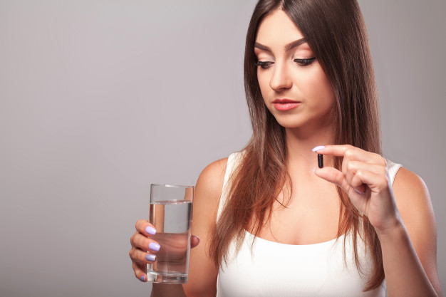
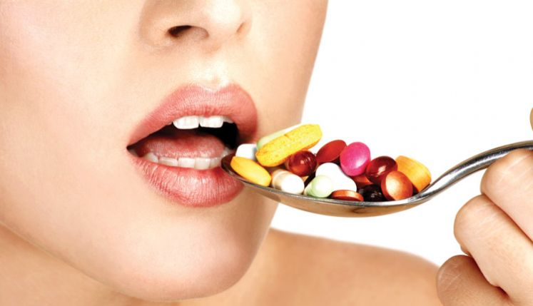

|  | ||
A vitamina B6 ajuda a dormir melhor |
Suplementos vitamínicos não devem ser tomados de estômago vazio |
Os adeptos do veganismo devem tomar suplementos de vitamina B12 |
|  | ||
O excesso de vitaminas pode ser tão prejudicial quanto a carência |
A toma de ácido fólico é importante nas mulheres que pretendem engravidar |
A vitamina E ajuda a retardar o envelhecimento |